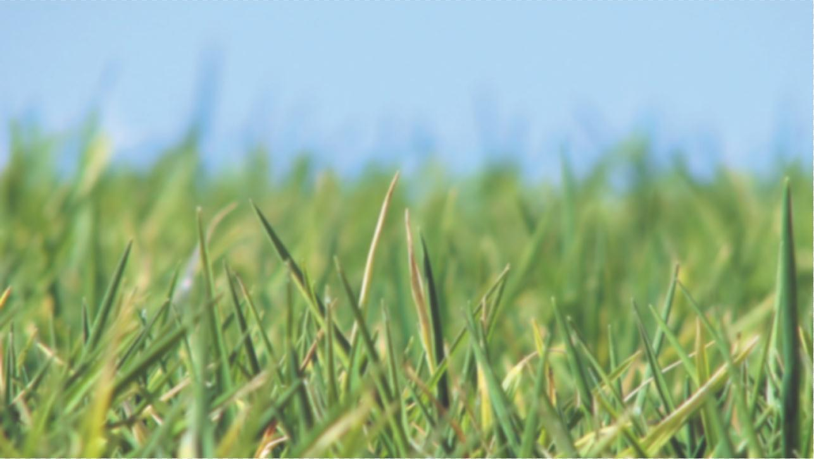

写在新的开头
当写这个的时候暑假已经快结束了,网站基本上可以用了,虽然很多方面还不尽如人意,但日后还可以慢慢改进.可能是累了吧,或许是疲倦了,想停下代码工作,留点文字,记录一下这一个暑假的历程.有些人喜欢用拍照记录生活,每到一个地方就要把自己和风景拍进去,而且拍照的姿势都还差不多,即使他们的照片看不出任何美感,但他们仍然乐此不疲.我也不是一个文人骚客,作文从来没被当成过范文,但是我会时不时写点东西,纪念一些有意义的事情
我上大学在图书馆借的第一本心理学书叫”心理学质化研究”,大概100多页的小书,讲的是质化研究的一些方法论,例如观察法,访谈法等,书中还顺便批判了一下量化研究的缺陷,呼吁心理学学者同时重视量化和质化研究.当然我大一刚进去,哪知道神马是质化神马又是量化,看了也没看懂,就记得有人为了研究土著人,跑去当地生活,几十年如一日的记录所见所闻.当然我是不能理解这样的行为的,至少现代社会的便利对我的吸引,怎么样都会大于只穿裤衩的野人.所以”科学是一种信仰”,小学老师说的,要成为一个科学家是很难的,要掌握很多知识,读很多书,成为一个科学家是很光彩的事情.现在想来,科研也是一种牺牲. 从我的了解看来,研究生的生活简单来说就是:写论文和准备写论文.而且很多时候做实验不光要靠脑力,还要靠体力.不是每个人都适合研究生的生活,当我说这个的时候不是在煽动情绪,不过,你觉得你适合搞研究吗? 在知乎上搜索了一下”博士”这个词,排除最高出现的”女博士”话题之外,有很多关于为什么读博和读博的条件之类的问题. 首先,读博还是要看专业和老板的,这决定了读博时期的工作量和日后的发展,然后,还有个人追求问题,读博能给你以后的生活带来怎么样的影响,最后,还要考虑家境等其他因素.所以那些一进大学就决定要走科研道路的人,可能是从小就被教育要当科学家的乖孩子吧. 我对科研没有偏见,那些研究生比我们苦得多,本科生如果不去实验室看看,是不知道”大学”的另一面的. 但是话又说回来了,你确定你不适合搞科研吗?如果说搞科研最纯粹的理由,那便是对这个世界有一颗好奇心,想去探索和发现那些美好的未知事物.其实不搞科研,好奇心对于一个人来说也是极为重要的,吃货有对美食的好奇,驴友有对美景的好奇,在好奇的驱使下我们的生活变得丰富.
你听过”初心”这个词吗?当你刚接触一样东西的时候,好奇会让它对你产生巨大的吸引力,可是当你慢慢接触之后,你渐渐熟悉它了,当时由于好奇而产生的吸引力不再有了,你还会像当时那样的矢志不渝吗?”人生只若如初见, 何事秋风悲画扇”, 我们不是经常怀念当初的美好, 感叹岁月不再.无论是恋爱还是事业的产生都可能是源于好奇, 出于新意.但是要维持下去, 需要的是保持”初心”. 初心就是保持最初的那个状态，对一切事物探索和好奇，不被自己已固有的想法所箍禁。研究者的”初心”是对探索的渴望,是对研究的热爱.恋人的”初心”是希望从对方眼中看到一个更好的自己和一个温馨的世界,为人师表的”初心”是希望能塑造一段成长,见证一次成熟.你的”初心”呢? 还记得高中时写下的雄心壮志吗,还记得刚进大学时对自己提出的种种要求吗?我和你一样也迷茫过,也曾经对大学失望过.我记得我曾经甚至真的埋怨过大学的老师,觉得他们不关心学生,但是这个暑假李林老师对这个项目的支持,和他们几个老师对实验心理学的课程建设方案,让我彻底改变了想法,老师们一直在想着如何提高我们,只是他们不再像高中一样逼着我们做题了.他们一直在思考者如何改变自己的教学方式让我们收获更多,只是有时候他们可能太忙了,不会出现在我们身边,这不代表他们不关心学生.所以你要相信,只要你愿意,你在学术这条路上永远有人陪着你.
这个暑假,天天坐在电脑前面敲代码,练跳舞的时间都牺牲了,只怪我too young to simple,低估了项目的难度,所以现在呈现给大家的也只是一个能凑合用的网站.有时,当我遇到困难,想放弃的时候,我问过自己,为什么不像一个正常的学生一样享受暑假,我姐姐也一度追问我为什么不回家,是不是和家里闹矛盾了.我给她的回答是,我给了老师承诺,要把项目做出来,不然老师会责怪我的.其实李林老师人很好,我就算写到一半停止了,他也肯定会说,没事,你要是太累了就去休息一下,开学再来做也不迟.而坚持下来的原因是因为我想为大家做点事情.大二的实验课是很重要的一门课,它可以让我们简单体验科研者的生活,但是这门课又有很麻烦的地方,至少我是被搜集实验数据这样的事情彻底弄崩溃了,我不想让这种麻烦的事情每年都重复地浪费大家很多时间,我觉得大家应该把时间花在如何处理分析数据上,而不是想法设法的去搜集实验数据,最后弄得精疲力竭导致实验报告草草了事.我希望能通过自己的努力,来减少大家的麻烦,我希望以后几代学弟学妹们都可以从这个网站上面获益.就像是一份”样卷”一样流芳百世!!!或许这就是我的”初心”吧, 我很清楚地记得有学妹给我说过, 感谢我翻译的神学答案, 让她们期末复习轻松了很多, 我大一时翻译答案是闲的蛋疼找点事情做, 真的没想到能帮助大家.能听到感谢我真的感到很开心, 所以希望做更多的事情来方便大家.也希望听到更多的鼓励和感谢… O(∩_∩)O哈哈~当然,我承认我能力有限,但是我会一直改进下去,如果网站有做的不好的地方,甚至让你在使用的时候都感到烦躁,那么请过来骂我,我会给你道歉,并且承诺改正.我希望能听到大家的反馈,来促使我继续完善网站.
如果我的努力能换来你的一声感谢,甚至是一阵感动,那这便是我的”初心”.